ドラッグで回転 · ホイールで拡大
読み込み中
Aポーズの4方向画像から再構築した胴体の3D形状と、それを水平に64層へ切り出したスプライトスタック素材です
character_config.json の描画順で Body・Leaves・Face・Arms・Feet・Tail の層を実際に読み込み、Unity用シェーダーと同じ計算で描画
形状と既存の64枚・メッシュはそのまま。隣の層との間を補間して描画（Body/SDF, Body/NormalExt を追加）
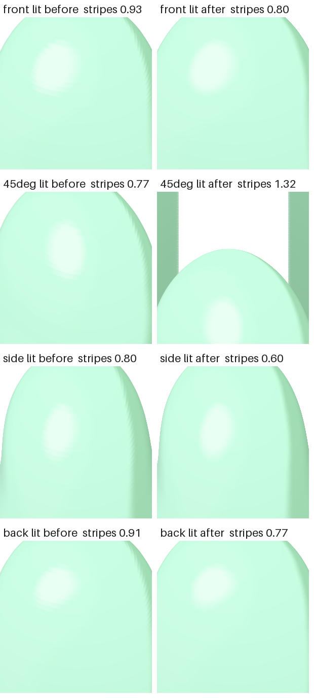
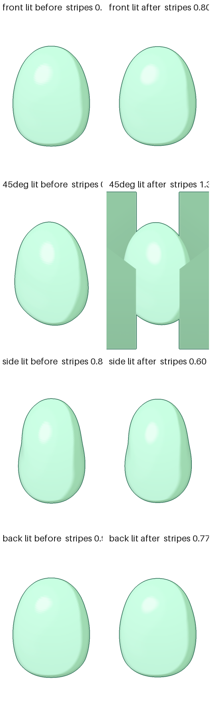
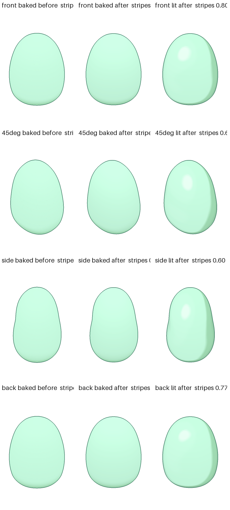
Tail/ · 背中の下の丸いしっぽ。体とのつなぎ目は丸く埋めています
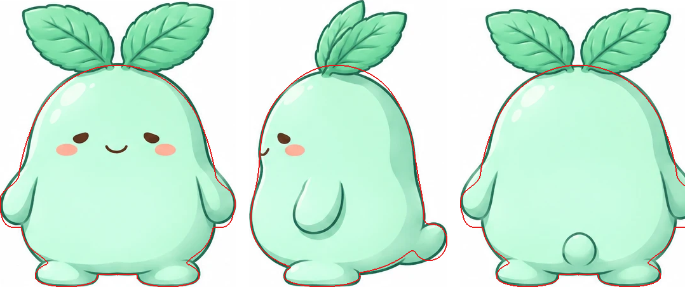
Limbs/Arms · Limbs/Feet · 胴体と同じキャンバス・中心・層の間隔（足は胴体の底より下なので層番号がマイナス）
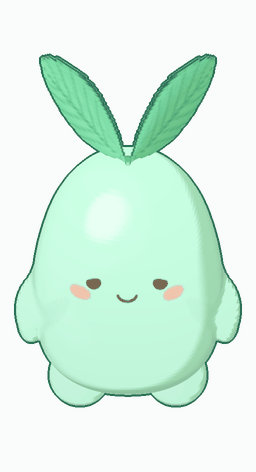
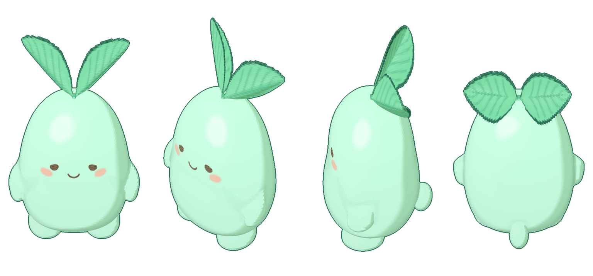
Face/ · 胴体の表面に貼った薄い殻（胴体の層の1/8の間隔、64層）
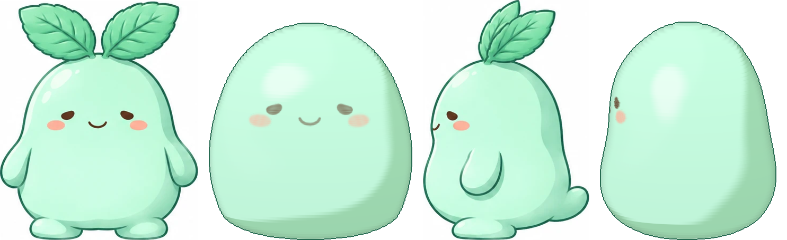
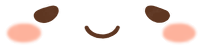
Leaves/ · 胴体と同じキャンバス・中心・層の間隔（層番号 061〜084）
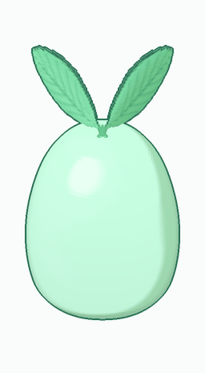
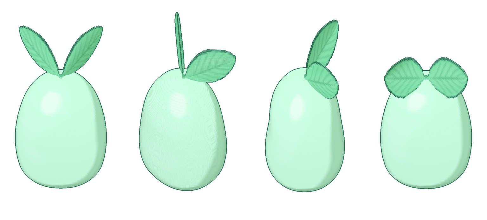
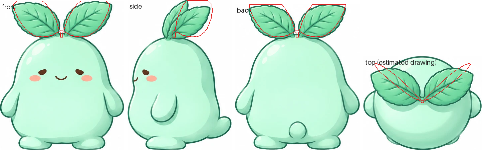
法線ライティングで重ねて回したもの · 見下ろし 0.75 · 輪郭線は重ねた後に付加
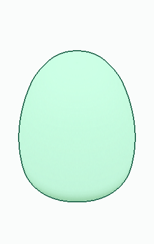
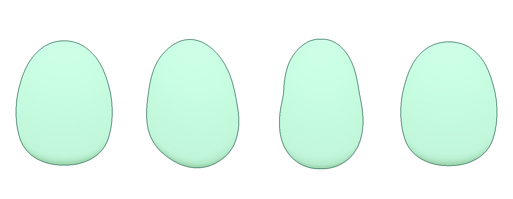
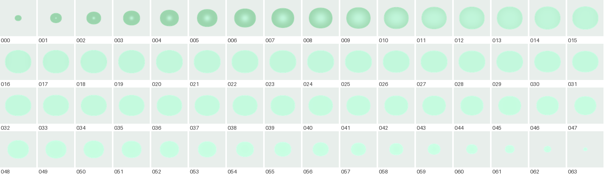
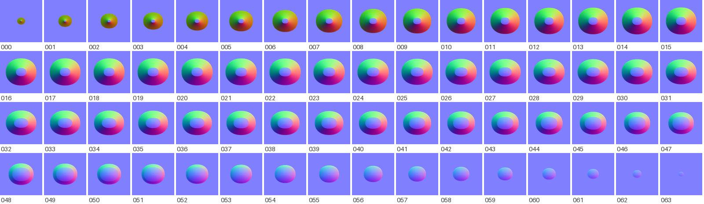
Preview/front.png · side.png · back.png · top.png（3Dモデルからの直交投影）

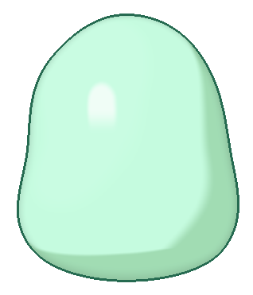
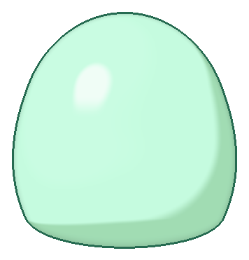
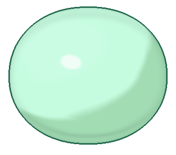
Preview/head_before_after.png · 比較した4案は Preview/crown_options.png

赤 = 3Dモデルの輪郭 · 緑 = 計測に使った輪郭点 · 灰 = 腕・足・しっぽ・葉として除外した点

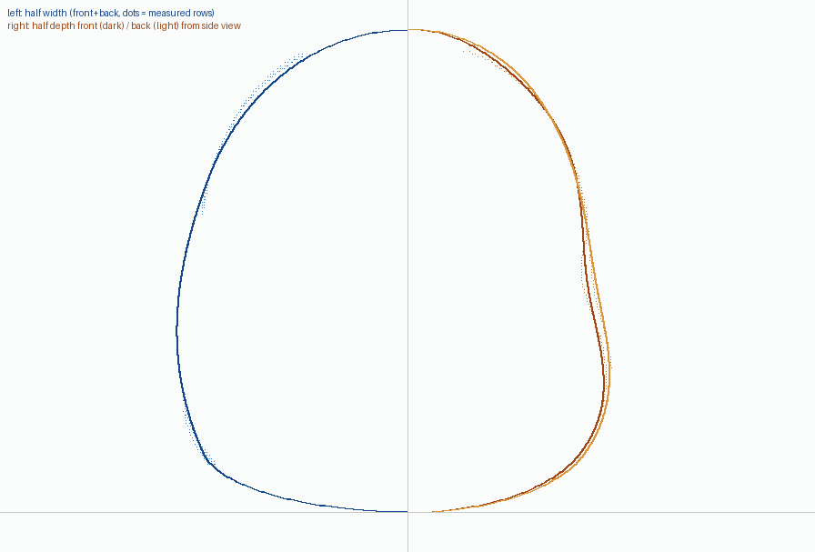